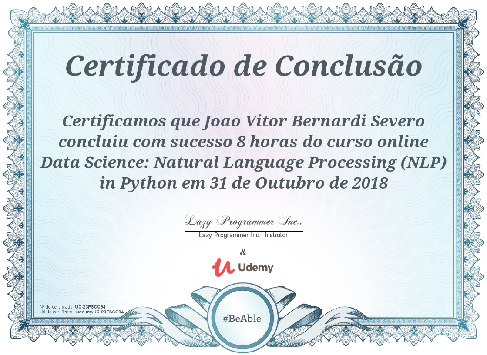
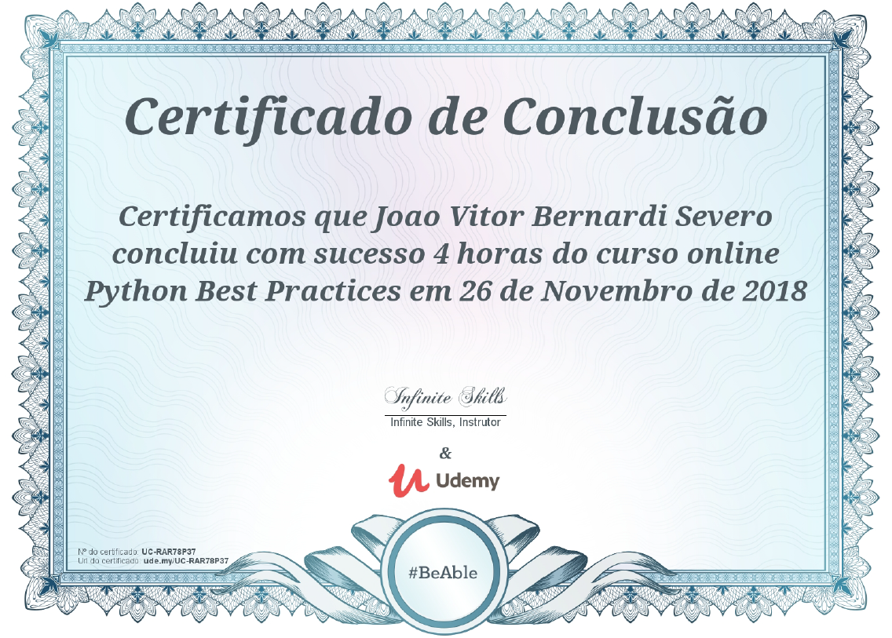

Bacharelado em Engenharia de Software
Meu curso de gradução que escolhi fazer na PUCRS, uma das primeiras a criar o curso e abrir vagas aqui em Porto Alegre. O curso traz uma abordagem voltada para a área de desenvolvimento de software que permite o aluno atuar nas áres de desenvolvedor, gerente de projeto, testador... Enfim, todas as posições dentro de um time de desenvolvimento.

Python 3 - Iniciante ao Avançado
O curso cobre todos os conhecimentos básicos que um programador Python necessita para conhecer a linguagem e mais que isso ele apresenta conceitos avançados que não seriam facilmente encontrados, dessa forma sendo uma ótima porta de entrada para quem deseja programar em Python e um ótimo conhecimento para mim.
Data Science: Natural Language Processing
Feito por um entusiasma de Data Science, o curso é uma apresentação com exemplos de utilização para garantir uma segurança ao aluno na hora de colocar em prática o que aprendeu. É dividido em vários módulos que me ajudaram a entender melhor como é possível fazer a máquina nos entender e apresentar resultados baseados na análise do que nós informamos. O professor utiliza a biblioteca Scikit-Learn para construir os modelos, uma importante bilbioteca para quem deseja mergulhar no mundo de Data Science com Python.

Fundamentos de Engenharia de Software
Para afirmar minha posição como engenheiro de software e testar meus conhecimentos decidi fazer a certificação da Microsoft, "Software Development Fundamentals" para pôr a prova o que eu realmente sabia e, felizmente, consegui passar na prova mesmo não tendo pleno conhecimento das tecnologias da Microsoft como .Net e C#. Pude perceber que muitos dos conceitos que achava que eram intrínsecos às linguagens de programação poderiam ser muito bem separados e utilizados de forma geral após essa prova.

Pandas
Entrando na área de Data Science, senti a necessidade de aprender mais sobre as bibliotecas e frameworks que iria utilizar na minha carreira e me deparei com este curso que aborda uma das mais importantes quando o assunto é trabalhar com grande volume de arquivos e tabelas de csv, excel, etc. O curso é curto, mas me deu uma ótima visão sobre a biblioteca e um ótimo conteúdo na área de Data Science.
Melhores práticas com Python
Ao me aprofundar no estudo de Python tanto para a área de Data Science quanto para desenvolvimento de aplicações e sistemas, senti a falta de uma base que poderia me dizer se o que estava fazendo estava seguindo algum padrão de projeto bom ou se estava utilizando Python da maneira correta e mais pythonica possível. Pensando nisso fui atrás deste curso que me ensinou algumas técnicas que não conhecia e me permitiu amplicar meus conhecimentos quanto a linguagem pura.

Expressões Regulares (Regex)
Assim como o caso do Pandas, o Regex se tornou algo atrativo e que achei necessário aprofundar conhecimentos, afinal como processar grandes níveis de conteúdo e tratá-los de forma eficiente sem utilizar expressões regulares? Eu não saberia dizer. Esse curso traz todos conhecimentos básicos para começar a utilizar Regex e alguns mais avançados (que inclusive utilizei em alguns trabalhos pessoais) que são necessários em algumas situações que envolvem várias variáveis para a determinação de um produto.
SQLite com Python
O trabalho com banco de dados é algo que não tem como fugir atualmente e como encontrar um que seja gratuito e de fácil manipulação para aprendizado? A resposta com certeza é SQLite. Embora seja mais limitado que um banco de dados hospedado em um servidor que possui uma faiclidade estupenda de expansão, o SQLite é perfeito para aprendizado e pequenos/médios volumes de dados, inclusive foi o banco utilizado na construção do meu projeto de freelance onde a duração do banco de dados foi planejada para um mínimo de dez anos.